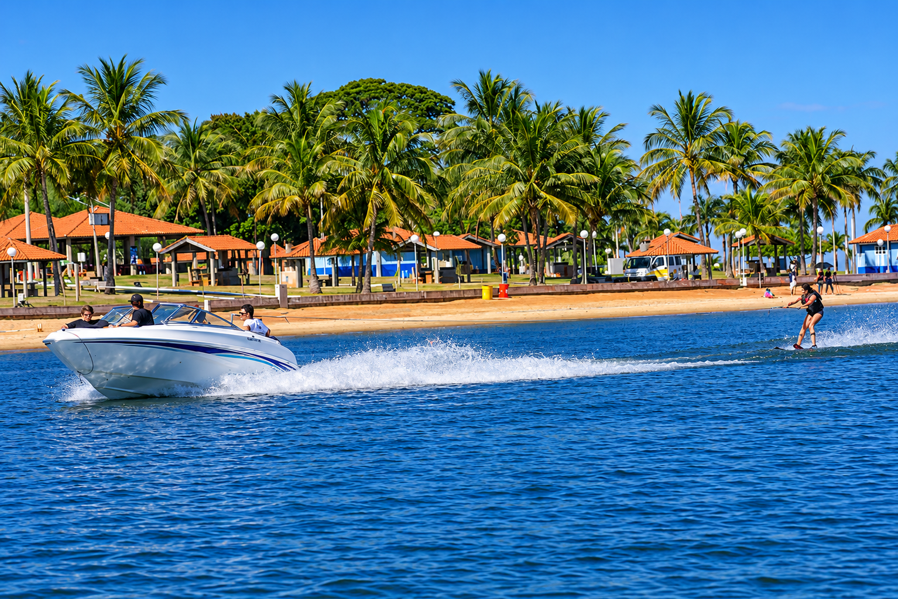
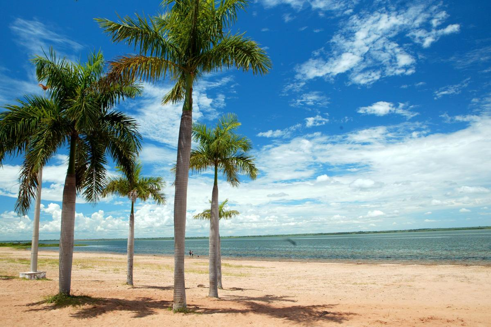
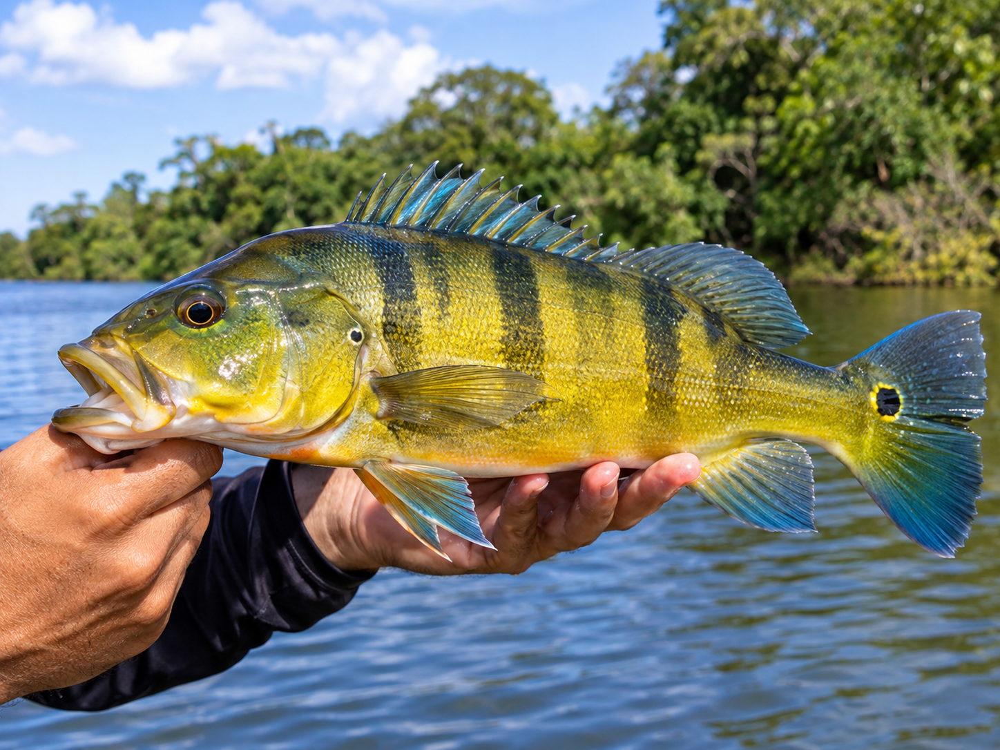
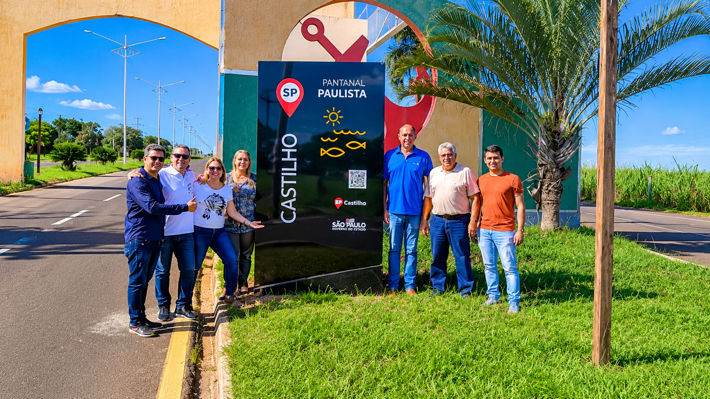

EXPERIÊNCIAS
Circuito de Pesca Esportiva
Descubra a emoção da pesca esportiva em meio aos rios e às paisagens naturais do Pantanal Paulista.

Uma experiência entre rios e natureza
O Pantanal Paulista reúne diferentes municípios que compartilham paisagens marcadas pela presença dos rios Paraná e Tietê. Nesse cenário, a pesca esportiva é uma das atividades que ajudam a valorizar o turismo e as belezas naturais da região.
A atividade proporciona momentos de lazer, contato com a natureza e contemplação das paisagens. É também uma oportunidade de conhecer diferentes destinos e comunidades que fazem parte do Pantanal Paulista.
Conheça alguns aspectos da pesca esportiva

Destinos
Conheça os diferentes municípios e ambientes da região que oferecem paisagens propícias à pesca.

Vida aquática
Os rios da região abrigam diversas espécies de peixes e fazem parte de um importante ecossistema.

Turismo regional
A pesca esportiva contribui para movimentar o turismo, os serviços e a economia dos municípios.
Pesca responsável
A prática da pesca deve respeitar as normas ambientais, os períodos de defeso e as regras de cada localidade. A preservação dos rios e das espécies é fundamental para que essa experiência continue fazendo parte do turismo regional.
Onde pescar na região
Em Castilho, a pesca é embarcada, com guias piloteiros pelo Rio Paraná, próximo à Usina de Jupiá. Pontos como Ponta da Ilha, Bambu, Redemoinho e Buracão são conhecidos dos pescadores, e o Guia de Rotas Turísticas cita espécies como pacu, piau, dourado, barbado, piapara e pintado.
Em Itapura, onde o Rio Tietê encontra o Paraná, a pesca esportiva reúne tucunaré azul e amarelo, traíra, pacu, tilápia e corvina, com a Prainha Municipal como ponto de apoio e torneios como o Tucuna Free.
Por que optar pela pesca esportiva?
O Pantanal Paulista é um destino que encanta pela beleza de suas paisagens naturais, pela riqueza de sua vida aquática e pela tranquilidade de seus rios. Cercada por cenários de tirar o fôlego, a região oferece uma experiência especial para quem deseja se conectar com a natureza e viver momentos inesquecíveis.
Optar pela pesca esportiva é muito mais do que simplesmente pescar: é aproveitar o contato com as águas, conhecer novas paisagens, explorar diferentes municípios e descobrir a diversidade de espécies que habitam os rios Paraná e Tietê. É uma oportunidade de reunir amigos e familiares, relaxar e conhecer um pouco mais das riquezas naturais do interior paulista.
Além de proporcionar lazer e aventura, a pesca esportiva pode contribuir para o desenvolvimento do turismo regional, movimentando serviços, hospedagens, restaurantes e o comércio local. Quando praticada de maneira responsável, respeitando as normas ambientais e a preservação das espécies, também ajuda a valorizar o patrimônio natural da região.
Seja você um pescador experiente ou alguém que deseja viver essa experiência pela primeira vez, o Pantanal Paulista é um convite para descobrir novos lugares, apreciar a natureza e criar boas lembranças.
← Voltar para experiências